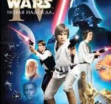

Звёздные войны 4
Год:1977
Режиссер:Джорж Лукас
Жанр:Фантастика
Сюжет
Сюжет фильма «Звёздные войны: Эпизод IV — Новая надежда» рассказывает о юном фермере Люке Скайуокере, который случайно узнаёт о повстанцах, борющихся с Галактической Империей. Вместе с мудрым наставником Оби-Ваном Кеноби, контрабандистом Ханом Соло и Чубаккой Люк отправляется спасать принцессу Лею. Герои проникают на боевую станцию «Звезда Смерти», а Люк начинает открывать в себе силу джедая. В финале он помогает Альянсу повстанцев уничтожить главное оружие Империи.Юный герой также раскрывает тайну своего происхождения и узнаёт, что его отец был великим джедаем. Эта победа становится началом масштабной гражданской войны, в которой Люк Скайуокер принимает судьбу нового защитника галактики.